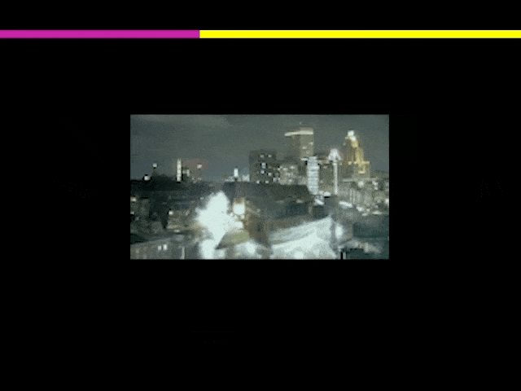
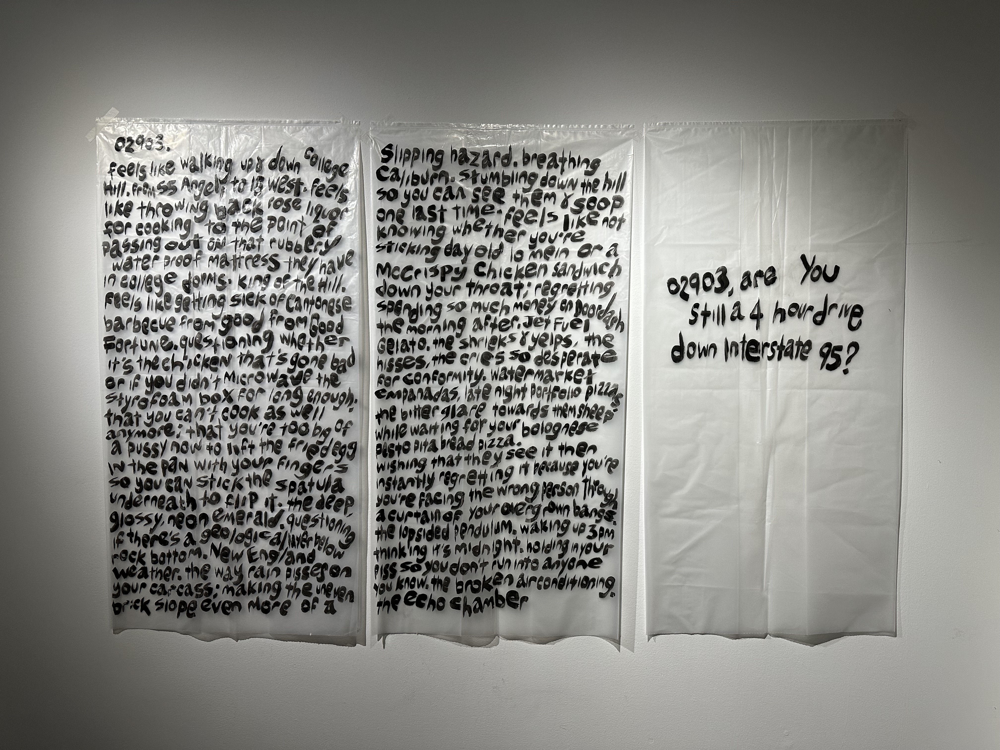
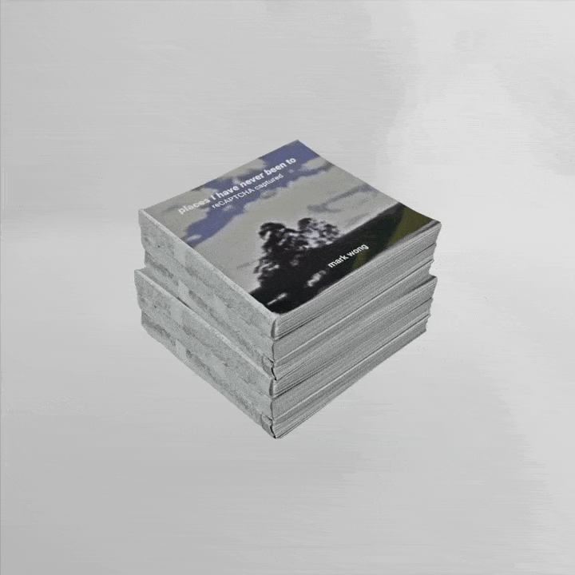
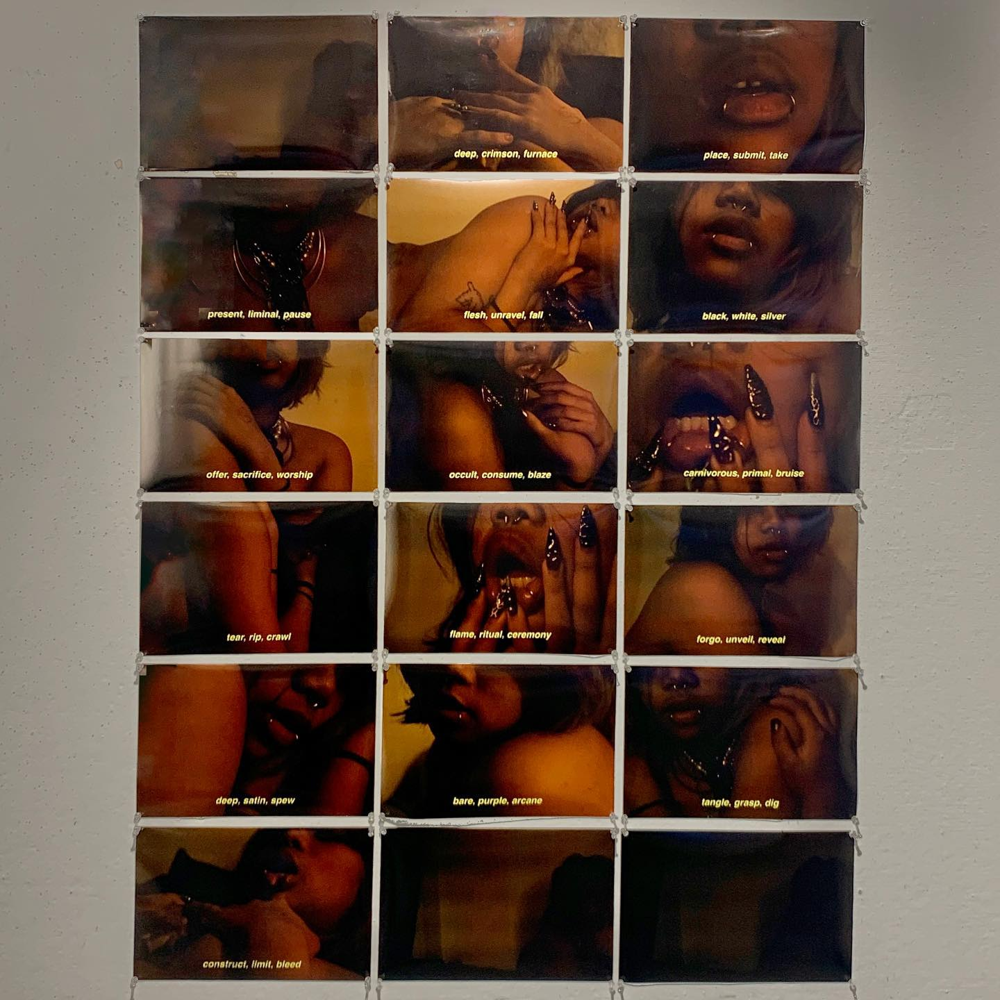

mark_07_fact.html
i do a lot of writing.
but i dont like writing writer or poet on my resumes.
i think it sounds a little pretentious.

^here are some of my recent works.
i think the gray space between fine arts, poetry and design is interesting.
^ tap on this gif of me eating a twinkie.